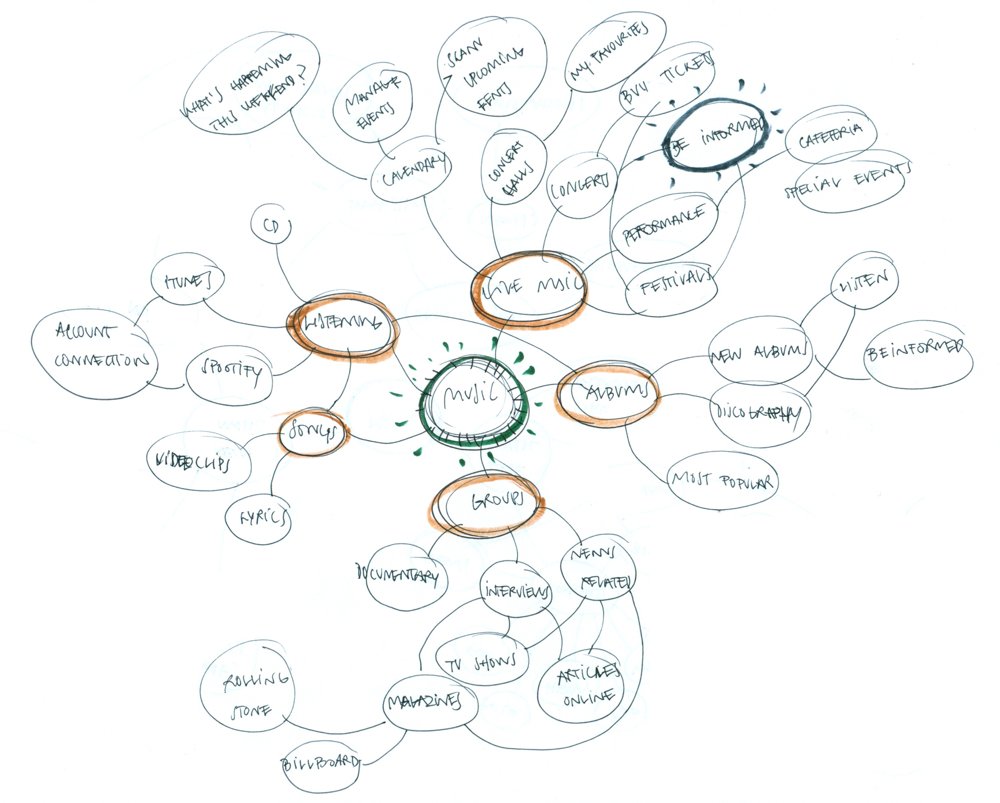

Ask people around you if they like to go to concerts and 94% will answer yes. Then ask them if they’d like to go to concerts more often and 89% will say yes. If so, why they don’t go more often? More than the half will answer that they are not always aware about when their favorite groups are coming to town. For all this people we want to design Sound Around, an app to never miss a concert again!
The problem
With an everyday life full of activity and things to think about, it’s not always easy to keep abreast about everything that happends in around us.
The same happens with the concerts of our favorite groups that take place in out town. The vast majority of people use apps to listen to music daily, when they come and go from work, or to relax at home, but there are few ways to know when and where we can see our favorite groups live.
Personally, few things anger me more than to find out about a concert that I would like to go to when it has already occurred, or when there are no tickets left. Precisely, those are the frustrations that Sound Around intends to solve.
Let the show begin!
The solution
This project was born from a personal need, and a generalized interest in having, in an easy, fast and intuitive way, updated information about when and where your favorite groups plan to play in your city.
To design an appropiate solution, we propose the creation of a mobile application that does (at least initially) little but very well. The MVP (Minimum Viable Product) for this project should allow our users to follow their favorite artists in order to receive notifications when they come to your town, and then, if wanted, allow them to very easily buy tickets for the events they want to attend.
The process
Throughout the creation process we will be in a state of search and analysis of our main pain points. Detect the needs of our potential users, getting to know them to design solutions accordingly, test the product as many times as possible, and iterate to reach the best solution will be our working process.
Getting to know the user
To begin outlining a solution, we must first know what needs to be solved, and whether our assumptions about user needs are right or not. We don’t want to build something that nobody needs!
To achieve this, our first step is to ask potential users about a set of aspects, to know where to go and how. We begin a process of research and analysis, through a survey that we send to several people.
- How many concerts do people go to annually?
- Would our users like to attend live events more often?
- If so, what are the reasons that prevent them from doing so?
- How do people find out about events you may be interesterd in?
These are some of the doubts that we seek to answer. We distribute the survey across social media and friends, and with 63 answers, we can begin to work on a sufficiently broad basis of data. You can take a look at the survey sent and the results after all the answers received.
Thanks to the analysis of the survey, we can verify that the product interests the majority of the respondents, and also detect important aspects that will help us build an attractive product for our final users.
- The 68% of our respondants ellos dicen ir a 0 to 4 concerts annually. Un 21% van a 5 to 8 conciertos, y solo un 11% dicen ir a más de 9 al año.
- Knowing the artist (84%), the ticket price (70%) and the date (62%) are the most important things to concider when deciding whether or not to go to a concert.
- The 89% of our participants would like to go to live concerts more often. That’s great news!
- And the main reasons that prevent them from doing so are that the tickets are too expensive (59%), that they have a hard time being up to date about their favorite groups planning to come to their town (52%) and finding someone to go with (35%).
- Most of them find out about concerts by word of mouth (63%), facebook (56%) or browsing online (49%). Very few use specfic apps like Songkick or BandsInTown.
User Personas
Although the questionnaire has confirmed most of our assumptions, it’s important to frame these responses and numbers into something more tangible, and that helps us design throughout the entire process.
With that purpose, we do a small number of interviews, to dig deeper into the thoughts and habits of the users. These conversations and the previous research, allow us to develop a series of user personas that represent to user needs detected initially, and that grooup the bulk of our users. With this material in mind, it’ll be much easier to design a product that takes into account the user needs above everything.
Understanding the competition
In order to continue the process of research, we also perform an analysis of possible competitors. Although the survey makes us think that the vast majority of respondents don’t use or know any similar apps, inquiring a little, we find similar and powerful projects to take into account. Knowing them to imitate their virtues and get away from their weaknesses will be very useful to design our product. We’ll perfom a SWOT analysis on these three brands.
These three applications pursue some of the objectives we want to achieve but, for some reasons, all of them are products that can be improved in a graphic and usability level. This allows us to be optimistic and think that we are trying to enter in a market that still has room for improvement, and in which is possible to include new products like our.
User stories & flows
Once all this research and analysis has been done, and thanks to all the information gathered, we are able to start defining our MVP, and the main flows that need to be solved. With that in mind, we write a list of “user stories”, to clarify where to focus. We also design the most important flows corresponding to these “stories” taking into account everything learned, and knowing that they’ll probably evolve later.
In order to don’t dedicate efforts in aspects that don’t belong to our priorities, we differentiate our stories into two categories: “MVP” and “Nice to have”. The first ones are the ones that we are going to work on with more dedication initially, and the second ones belong to the group of features that are not a priority at this point.
Even so, we consider that the app must, above all,carry out in as smoothly and easily as possible the following actions:
- Follow my favorite artists. In order to send notifications about upcoming events, we need the user to create a list, as wide as possible, of artists that interest him. Therefore, facilitating the work of creating this content will be one of the most important points.
- Buy tickets. This is our main goal, because most probably will be our source of revenue. For this it is key to generate the feeling of excitement and urgency when the user is notified that a concert of his interest has been found. Also, the purchasing process must be as comfortable and reliable as possible.
- Register. We need the user to register so that he can save his content and receive notifications. Therefore, this process should be engaging, and we’ll try to generate “value” before signing up so the user want’s to crate an account. This particular flow will undergo a significant evolution throughout the process.
User stories
Main flows
Creating an identity
To connect with our users, we must design an app with an attractive and unique style, but at the same time intuitive and pleasant to use. Creating moments of excitement and harnessing them to catch our fans is key for the success of the product. We are also interested in using patterns, both visual and behavioral, that our users are familiar with. This is why we decide that the app will have a range of colors based on dark grays, reminiscent of the ones used by Spotify, with a very striking orange, which we will use to highlight the most important elements. This orange will also be our corporate color. For the typography we simply want to use a couple of fonts that look modern and that are easy to read. However, for the logo letters we’ll use a more “retro” typeface, that has more personality. Hopefully, that will make our barnd very recognizable.
To find the name of the app we do a brainstorm. We are looking for a name with rhythm, appeal and that, if possible, explains what the product is about. After evaluating several lists of possibilities, we choose “Sound Around” as it meets all these requirements quite efficiently. For the logo we follow a similar process. We are looking for something that explains in a visual way our product, that has a modern look and that meet the technical needs that a logo must have. Finally, after several iterations and queries , we choose this set of “broken” concentric rings, which again brings together the qualities we are looking for (numbers 2 and 5 of the “final variations” sheet).
Initial sketches
Final designs
Low-fi wireframes
At this point, we realize that we need to do a little bit more research on important aspects, in order to be able to correctly design our main flows, specially the onboarding process.
- Which music apps do our users use?
- How do they use these music apps?
- How do they save their favorite artists?
- How many artists do they have saved in their music apps?
To gather that valuable information, we elaborate and distribute a new form that will allow us to have the answer to all these and some other questions. And we discover that…
- The most used music apps are YouTube (80%) and Spotify (72%). iTunes is the third one but is also much less used (44%).
- It’s also relevant that a 44% of the respondants still download the music they like to hev it in their devices.
- We also realize that the most common way to save your favorite artists is through the creation of custom playlists.
- On average, our users save about 35 different artists in their applications.
Finding how to properly use this data can be key to generating, in an immediate and easy way, very valuable content within the app.
Considering everything learned, we begin to model the first designs for the different pages of the application. At this point we are interested in keeping a very low level of detail, so the first ideas are represented by handmade drawings.

At this point we start to realize some of the critical points of the app. We take advantage of the designed screens to create a quick prototype, and test it informally with some volunteers.
Generating content before registration will be one of our main concerns. We also start thinking about how navigation should work within the application, so that it’s as fluid as possible.
Thanks to the guerrilla user testing with the marvel prototype, we are able to redesign the onboarding flow to make it more engaging and effective. We want the user to generate some value before signing up, so he has a good reason to create an account.
Hi-fi wireframes
In order to materialize more accurately all the information we are collecting, we begin to draw the main screens in more detail. During this step of the creation process, we’ll look at the patterns and guides established by Google and its Material Design. That way we can establish with ease the main lines of our design, and ensure that these will be easy to produce from a development point of view. In this phase put our focus on the most important features of the app, since, once finished the first version, we want to build a prototype that allows us to test the main flows. Therefore, it’s necessary to precisely design all the steps of the onboarding process, as well as the screens corresponding to the main navigation within the app and it’s main actions (seeing the list of events and detailed information of each one, seeing the list of artists and provinding ways to follow more, and being able to manage the settings div).
From all of these designs, we build a prototype using InVision, so we could start to perform a series of usability tests, which would allow us to see if the app works or not as intended.
The tests made allow us to verify that, in general terms, the application works quite well. The vast majority of the participants were able to complete the tasks requested without too much trouble.
- Register as a new user.
- Find a way to buy tickets for an event that interests you.
- Add one or more artists to your list of tracked artists.
- Access the div to manage the app notifications.
Although in general the tests ended with very good results, and that people liked the appearance and the behaviour of the app, we detect several points of improvement.
For a second version of the product, we would have to polish the onboarding process, since it’s one of the most importants. We also detect some more specific aspects of the app that could benefit from a liitle more of refinement, such as the “BUY TICKETS” button and the event page. To find solutions for this and other aspects, we do a set of preference tests through UsabilityHub. This allows us to quickly iterate with several options of the same screen and decide which one is more appropriate depending on the responses of the respondents.
Conclusions
Sound Around is a passion project as it seeks to solve a recurring problem for which, nowadays, many people and myself don’t have an proper solution. While I had several intuitions about the concept and the design, the most important lesson learned has been to control my own instincts. Although one may believe that he is the ideal user and the target for a product, it’s crucial to learn about those around us that share the same problem. Over and over again during the Sound Around design process I have been corrected by my users. It’s been difficult to change certain assumptions, but listening and analyzing potential users allowed me to design with confidence, knowing that decisions were made with the voices of the users in my mind.
In considering the further development of the product, we should consider strengthening the most important aspects of the MVP: the onboarding process, the navigation within the app, boosting the generation of enthusiasm in key moments …
Even so, we consider that the product is polished enough to launch a first version, which would very useful to see where to focus our efforts for an improved version of the app.